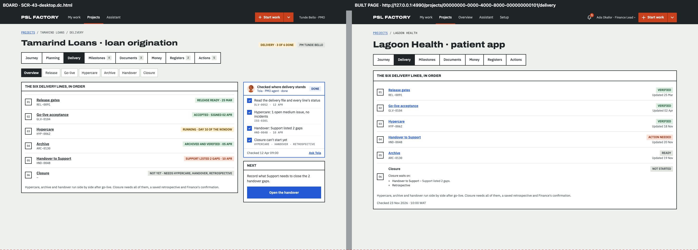
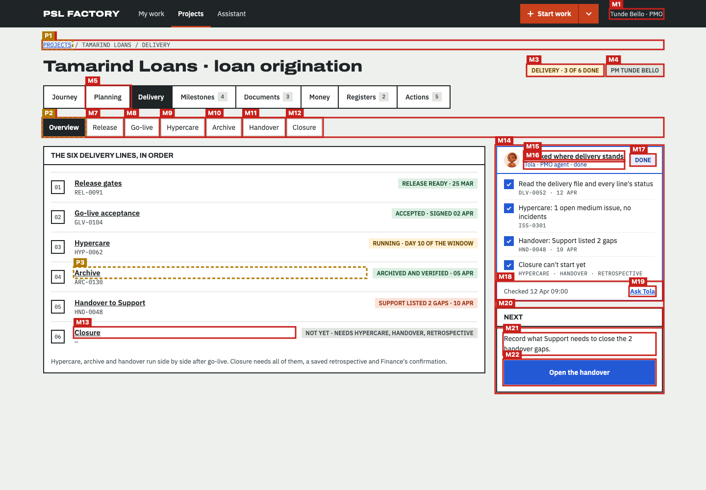
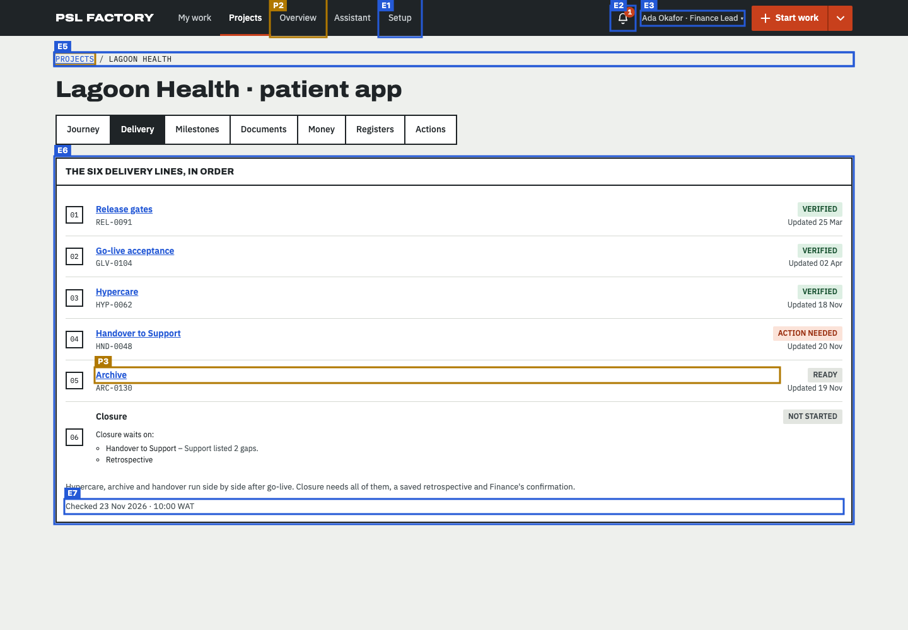
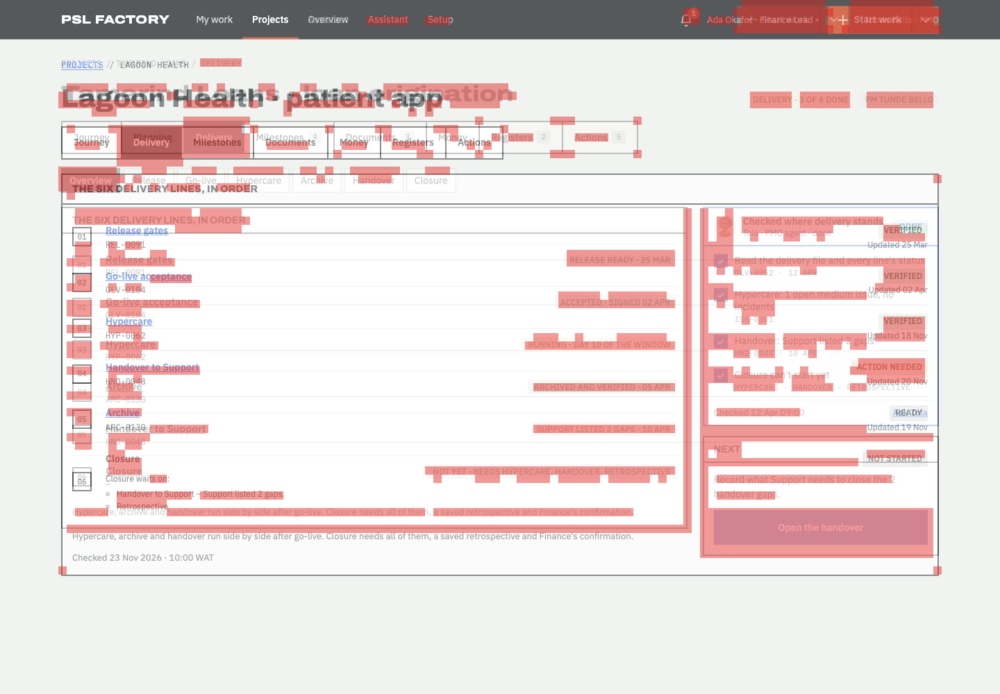

Does the built page follow the design?
Board SCR-43-desktop.dc.html compared with http://127.0.0.1:4990/projects/00000000-0000-4000-8000-000000000101/delivery at 1440px wide · 2026-11-24T02:58:49.367Z
- Every board item is on the page or approved as an exception (100%).
- Visual match 75.4 is below 90.
- 3 item(s) are in a different place; review them (not part of the pass rule unless --strict-position).
26 of 48 things drawn on the board were found on the page: headings, buttons, links, search and filter controls, table columns, labels and the repeated rows (counted once, not per row).
How closely the shapes line up: blocks, bars, tables and text areas, compared in 12px squares over the top 1000px. Different words in the same place still count as a match, so sample data does not lower the score.
Missing from the built page 22
Drawn on the board but not found on the page. Each one must be built, or approved as an exception.
| # | What | Text on the board | Where on the board | Exception |
|---|---|---|---|---|
| M1 | Text | Tunde Bello · PMO | right, 20px down | approved The shell shows the signed-in persona and the alerts bell; the board is drawn signed in as Tunde Bello. · builder proposal, pending design engineer |
| M2 | Text | PROJECTS / TAMARIND LOANS / DELIVERY | middle, 84px down | approved The project frame draws its own breadcrumb (Projects / <project title>); the fixture project is Lagoon Health, not the board's Tamarind Loans. · builder proposal, pending design engineer |
| M3 | Text | DELIVERY · 3 OF 6 DONE | right, 133px down | approved Spec Summary and Out of scope, DC-3/D-182: nothing is counted or derived; the API has no done count. · builder proposal, pending design engineer |
| M4 | Text | PM TUNDE BELLO | right, 133px down | approved The delivery overview carries no project manager; the project frame owns the header and shows the PM on the Journey tab. · builder proposal, pending design engineer |
| M5 | Tab | Planning | left, 176px down | approved The tab bar is built from the live tabs[] of the project; the board's Planning tab belongs to another feature. · builder proposal, pending design engineer |
| M6 | Tabs | Delivery lines | middle, 242px down | approved Spec Out of scope: the line sub-navigation (Overview, Release, Go-live ...) stays hidden until those screens exist (Question 3 a, D-187). · builder proposal, pending design engineer |
| M7 | Tab | Release | left, 242px down | approved Line sub-navigation strip is hidden (Question 3 a, D-187); its pages belong to F-113B to F-119. · builder proposal, pending design engineer |
| M8 | Tab | Go-live | left, 242px down | approved Line sub-navigation strip is hidden (Question 3 a, D-187); its pages belong to F-113B to F-119. · builder proposal, pending design engineer |
| M9 | Tab | Hypercare | left, 242px down | approved Line sub-navigation strip is hidden (Question 3 a, D-187); its pages belong to F-113B to F-119. · builder proposal, pending design engineer |
| M10 | Tab | Archive | left, 242px down | approved Line sub-navigation strip is hidden (Question 3 a, D-187); its pages belong to F-113B to F-119. · builder proposal, pending design engineer |
| M11 | Tab | Handover | middle, 242px down | approved Line sub-navigation strip is hidden (Question 3 a, D-187); its pages belong to F-113B to F-119. · builder proposal, pending design engineer |
| M12 | Tab | Closure | middle, 242px down | approved Line sub-navigation strip is hidden (Question 3 a, D-187); its pages belong to F-113B to F-119. · builder proposal, pending design engineer |
| M13 | Link | Closure | left, 669px down | approved A not-started line has no link (spec Row fields: null work_id means no link); closure has no work in the fixture. · builder proposal, pending design engineer |
| M14 | Side panel | (side panel) | right, 298px down | approved The Tola card and the NEXT card are hidden: no source for Tola's check or a Next sentence (spec Out of scope, D-182; Question 3 a, D-187). · builder proposal, pending design engineer |
| M15 | Text | Checked where delivery stands | right, 310px down | approved Tola card hidden (D-182, Question 3 a). · builder proposal, pending design engineer |
| M16 | Text | Tola · PMO agent · done | right, 328px down | approved Tola card hidden (D-182, Question 3 a). · builder proposal, pending design engineer |
| M17 | Text | DONE | right, 316px down | approved Tag of the hidden Tola card (D-182, Question 3 a). · builder proposal, pending design engineer |
| M18 | Text | Checked 12 Apr 09:00 Ask Tola | right, 576px down | approved Tola card footer hidden; the page draws its own 'Checked <as_of>' line under the rows. · builder proposal, pending design engineer |
| M19 | Link | Ask Tola | right, 586px down | approved Tola card hidden (D-182, Question 3 a). · builder proposal, pending design engineer |
| M20 | Pagination | NEXT | right, 630px down | approved NEXT card hidden: no 'Next' sentence source (D-182, Question 3 a). · builder proposal, pending design engineer |
| M21 | Text | Record what Support needs to close the 2 handover gaps. | right, 681px down | approved NEXT card sentence hidden (D-182). · builder proposal, pending design engineer |
| M22 | Link | Open the handover | right, 735px down | approved Spec Conflicts with the boards: per-row links replace the button; no start or next-step control from the overview. · builder proposal, pending design engineer |
In a different place 3
Found on both, but in a different order, side of the page, or area (for example inside the table frame instead of above it).
| # | What | How it moved |
|---|---|---|
| P1 | Link PROJECTS |
|
| P2 | Tab Overview |
|
| P3 | Link Archive |
|
Looks different 10
Found on both, but styled differently: table rows and cells, fonts, colours, underlines, outlines, corners. Not part of the score; check each one against the board.
| What | Difference |
|---|---|
| Link "Start work" |
|
| Link "More ways to start" |
|
| Heading "Tamarind Loans · loan origination" |
|
| Tab "Overview" |
|
| Text "THE SIX DELIVERY LINES, IN ORDER" |
|
| Link "Release gates" |
|
| Link "Go-live acceptance" |
|
| Link "Hypercare" |
|
| Link "Archive" |
|
| Link "Handover to Support" |
|
On the page but not on the board 7
Built but not drawn. Some are expected (data, status lines); the rest need the design engineer to approve or remove them.
| # | What | Text on the page | Where on the page |
|---|---|---|---|
| E1 | Link | Setup | middle, 0px down |
| E2 | Button | Alerts, 1 unread | right, 11px down |
| E3 | Button | Account menu: Ada Okafor · Finance Lead | right, 19px down |
| E4 | Navigation area | Breadcrumb | middle, 85px down |
| E5 | Text | PROJECTS / LAGOON HEALTH | middle, 85px down |
| E6 | tabpanel | Delivery | middle, 250px down |
| E7 | Text | Checked 23 Nov 2026 · 10:00 WAT | middle, 794px down |
Pictures
The red dashed line on the side-by-side marks how far down the visual score looks. On the marked board, red boxes are missing items (M). On the marked page, amber boxes moved (P) and blue boxes are extra (E). In the difference picture both screens are laid over each other and red squares are where the shapes do not line up.






Notes about this run
- Images: /_blob/ images are served from /Users/Hunchoo/psl-factory-main/design/mascots/canvas-assets.json (19 mapped).
Found on both (26)
| Navigation area | Main | |
| Text | PSL FACTORY | |
| Link | My work | |
| Link | Projects | |
| Link | Assistant | |
| Link | Start work | |
| Link | More ways to start | |
| Main area | ||
| Link | PROJECTS | |
| Heading | Tamarind Loans · loan origination | page: Lagoon Health · patient app |
| Tabs | Project | |
| Tab | Journey | |
| Tab | Delivery | |
| Tab | Milestones 4 | page: Milestones |
| Tab | Documents 3 | page: Documents |
| Tab | Money | |
| Tab | Registers 2 | page: Registers |
| Tab | Actions 5 | page: Actions |
| Tab | Overview | |
| Text | THE SIX DELIVERY LINES, IN ORDER | |
| Link | Release gates | |
| Link | Go-live acceptance | |
| Link | Hypercare | |
| Link | Archive | |
| Link | Handover to Support | |
| Text | Hypercare, archive and handover run side by side after go-live. Closure needs all of them, a saved retrospective and Finance's confirmation. |
How the scores are worked out
Element coverage. The board is drawn locally from its own template and sample data. From the drawn board the check lists everything a person sees or uses: page areas (navigation, main, search), headings, links, buttons, form fields with their labels, table column headers, filter, search and pagination controls and fixed labels. Rows drawn from sample data count once, as a pattern ("table rows with these columns"). Each item is looked for on the page by its kind and its words (ignoring capitals, curly quotes and small wording differences, at least 80% similar). Coverage is found ÷ drawn. Order is compared in reading order (top to bottom, left to right); an item is "moved" when it breaks the order, sits on the other side of the page, or sits inside a different area.
Visual match. Both full-page screenshots are compared in 12px squares after a light blur, over the board's height (1000px; the page is 1000px). Only squares with something in them count. A square matches when its colours line up, or when both have text or lines there. Score = matching ÷ counted squares (4775 of 6331). Over every square including empty background it would be 84.6.
Technical details
Board file: /Users/Hunchoo/psl-factory-main/design/canvas/project/SCR-43-desktop.dc.html
Viewport: 1440×1000
Report data: report.json
Exceptions file: /Users/Hunchoo/psl-factory-main/delivery/features/F-113/fidelity-exceptions.json